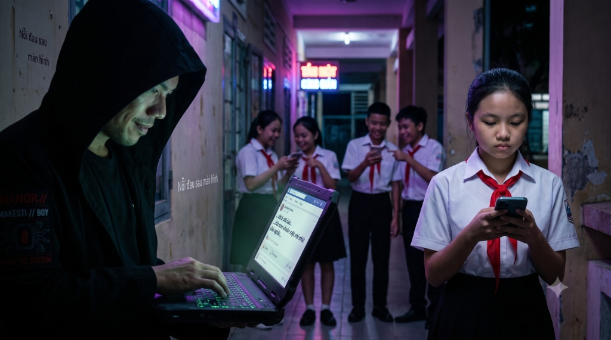
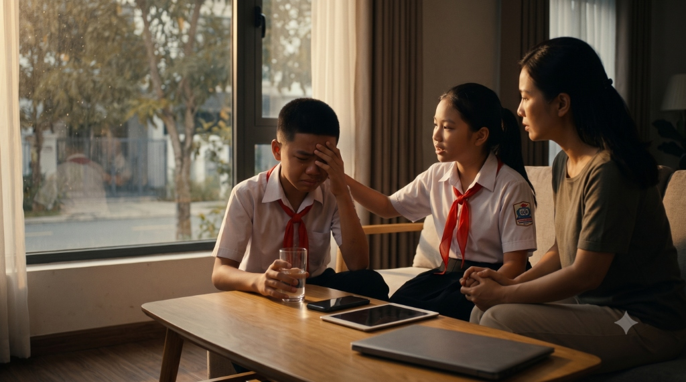
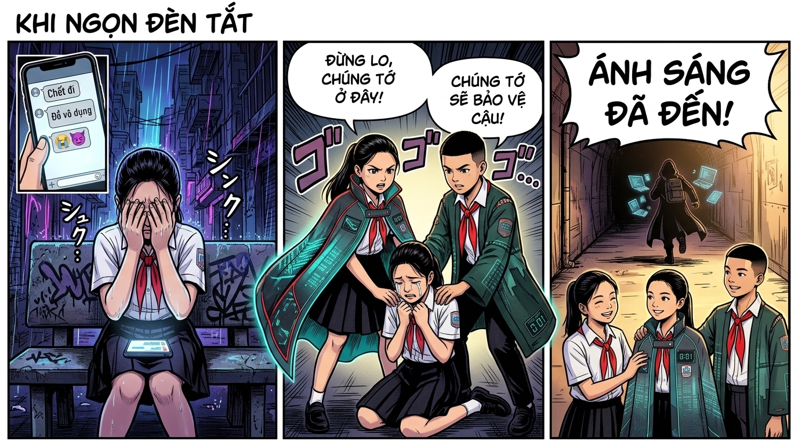
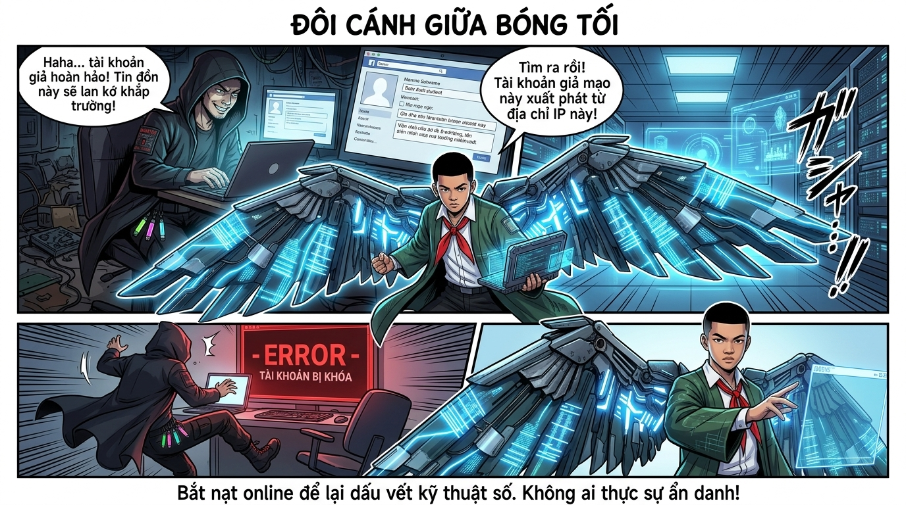
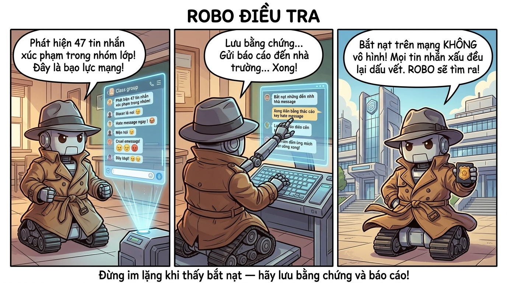

Nhận biết, phòng tránh và ứng phó với bạo lực, bắt nạt trên không gian mạng — xảy ra 24/7 và không có nơi trốn tránh.
🚫
Cyberbullying
Mọi hành vi dùng công nghệ để bắt nạt, xúc phạm, đe dọa hoặc cô lập ai đó đều là bạo lực mạng — dù chỉ là "đùa thôi"!
Xảy ra mọi lúc, mọi nơi
Các Dạng Bạo Lực Mạng
Bạo lực mạng có thể xảy ra ở Facebook, TikTok, Zalo, game online hay nhóm chat lớp học. Không giống bắt nạt học đường, nó diễn ra 24/7 — nạn nhân không có nơi trốn tránh.
💬
Bình luận ác ý
Chửi bới, lăng mạ, chế giễu ngoại hình trong bình luận hoặc tin nhắn riêng.
📸
Đăng ảnh/video xấu hổ
Chia sẻ hình ảnh riêng tư hoặc chỉnh sửa ảnh để bêu xấu nạn nhân.
🚪
Cô lập, tẩy chay
Cố ý loại trừ, không cho tham gia nhóm chat lớp, hội nhóm trực tuyến.
👤
Giả mạo danh tính
Tạo tài khoản giả mạo nạn nhân để đăng nội dung xấu, phá hoại uy tín.
📷 Hình ảnh thực tế về bạo lực mạng

Hacker gửi tin xấu, nạn nhân bị cô lập giữa đám đông cười chê
Bắt nạt trực tiếp thường đi kèm với bắt nạt trực tuyến

Chia sẻ cùng người thân — bước đầu tiên để vượt qua
⚠️
Dấu hiệu bạn đang bị bạo lực mạng
Lo lắng sau khi dùng điện thoại · Không muốn đến trường · Cáu gắt, buồn bã không rõ lý do · Tránh nói về hoạt động trực tuyến · Đóng máy tính/điện thoại khi có người lại gần.
Khi Bị Bạo Lực Mạng — Làm Ngay!
🛑
1
Dừng Phản Hồi
Đừng trả lời kẻ bắt nạt — phản ứng của bạn khiến chúng thích thú hơn và tiếp tục. Im lặng là vũ khí mạnh nhất.
📷
2
Lưu Bằng Chứng
Chụp màn hình tất cả tin nhắn, bình luận xúc phạm. Đây là bằng chứng quan trọng khi báo cáo với nhà trường hoặc cảnh sát.
🚫
3
Chặn & Báo Cáo
Dùng nút "Block/Chặn" và "Report/Báo cáo" trên mọi nền tảng. Nền tảng có trách nhiệm xử lý nội dung vi phạm.
🗣️
4
Nói Với Người Lớn
Chia sẻ với bố mẹ, thầy/cô hoặc người bạn tin tưởng. Bạn KHÔNG cần đối mặt một mình với tình huống này!
❤️
5
Chăm Sóc Bản Thân
Dành thời gian cho hoạt động offline: thể thao, âm nhạc, gia đình. Tìm kiếm hỗ trợ tâm lý nếu cần thiết.
🤲
6
Giúp Đỡ Người Khác
Nếu thấy bạn bị bắt nạt, hãy lên tiếng, hỗ trợ họ, báo với thầy/cô. Đừng làm người đứng nhìn!
Tìm Kiếm Sự Hỗ Trợ
📞
111
Đường Dây Bảo Vệ Trẻ Em
Gọi miễn phí, 24/7. Được hỗ trợ tư vấn tâm lý và can thiệp khi cần thiết. Bảo mật thông tin hoàn toàn.
🏫
TRƯỜNG
Giáo Viên Chủ Nhiệm
Thầy/cô có trách nhiệm bảo vệ học sinh. Báo cáo với GVCN để nhà trường can thiệp kịp thời.
👨👩👧
GIA ĐÌNH
Bố Mẹ & Gia Đình
Bố mẹ là chỗ dựa vững chắc nhất. Chia sẻ với họ — đây không phải lỗi của bạn và họ muốn giúp bạn.
🌐
ONLINE
Báo Cáo Online
Tất cả nền tảng lớn có nút báo cáo vi phạm. Facebook, TikTok, YouTube đều xem xét và xử lý trong 24-48h.
💪
Nhớ rằng: Đây KHÔNG phải lỗi của bạn!
Bạo lực mạng xảy ra vì kẻ bắt nạt có vấn đề, KHÔNG phải vì bạn làm gì sai. Bạn xứng đáng được tôn trọng và an toàn — cả trên mạng lẫn ngoài đời. Hãy lên tiếng và tìm sự giúp đỡ!
📖 Thư Viện Truyện — Bạo Lực Mạng
3 câu chuyện với số nhân vật khác nhau — Linh · Nam · ROBO · Hacker Mũ Đen

🛡️ LINH
Người bạn dũng cảm lên tiếng
🔍 NAM
Người hành động thực tế
⚠️ HACKER MŨ ĐEN
Kẻ kích động từ bóng tối
// Cảnh 1 — Bóng tối trong nhóm chat lớp 8A
HACKER MŨ ĐEN
Trong nhóm chat lớp 8A, ai đó — nghi là do Hacker Mũ Đen kích động từ xa — bắt đầu đăng ảnh chế giễu bạn An về ngoại hình và học lực...
Nhóm chat lớp 8A: "Haha trông buồn cười thật 😂" / "Đừng cho nó vào nhóm nữa" / "Học dốt mà còn hay nói!" 😈
Mỗi ngày, An nhận hàng chục tin nhắn chế nhạo. Cô bé bắt đầu không muốn đến trường, không dám cầm điện thoại, không còn cười nữa...
// Cảnh 2 — Linh nhận ra dấu hiệu bất thường
LINH
Linh để ý thấy An ngày càng trầm lặng, hay cúi đầu, không cười đùa như trước. Sau giờ học, Linh nhắn tin riêng cho An...
Linh: "An ơi, bạn có sao không? Mình thấy nhóm chat đang xảy ra điều không hay. Mình xin lỗi vì không lên tiếng sớm hơn... 😔"
An (rơi nước mắt): "Mình... mình không biết mình làm gì sai nữa. Mình chỉ muốn mọi người thích mình thôi. Mỗi sáng thức dậy mình đều sợ phải xem điện thoại..." 😢
// Cảnh 3 — Nam hành động ngay lập tức
NAM
Nam: "Nghe Linh kể rồi. Đầu tiên — ĐỪNG trả lời bọn đó, phản ứng của An khiến chúng thích thú và tiếp tục. Mình giúp An chụp màn hình tất cả tin nhắn xúc phạm làm bằng chứng! 📸"
Nam: "Tiếp theo — chặn và báo cáo từng người gửi tin nhắn xấu. Và quan trọng nhất: ngày mai mình cùng An nói với cô giáo chủ nhiệm!"
An: "Nhưng mình sợ bị trả thù..." Nam: "Có bằng chứng rồi, cô giáo sẽ xử lý công bằng. Bạn không phải đối mặt một mình đâu! Có mình và Linh bên cạnh!"
// Cảnh 4 — Ánh sáng trở lại với An
LINH
Cô giáo xử lý nghiêm khắc. Những học sinh tham gia bắt nạt phải xin lỗi trước lớp. Hacker Mũ Đen mất đi những "con rối" trong lớp học...
Linh: "An ơi, điều này KHÔNG PHẢI lỗi của bạn nhé! Kẻ bắt nạt mới có vấn đề, không phải người bị bắt nạt. Bạn xứng đáng được tôn trọng! ❤️"
Dần dần, nụ cười của An trở lại. Cả lớp 8A học được bài học: Im lặng khi thấy bắt nạt — cũng là một hình thức đồng lõa. ✨
💡 Bài học từ câu chuyện "Khi Ngọn Đèn Tắt"
Bạo lực mạng gây tổn thương tinh thần nghiêm trọng dù "chỉ là lời nói trên mạng"
Khi thấy bạn bị bắt nạt — hãy lên tiếng và hỗ trợ, đừng im lặng đứng nhìn
Lưu bằng chứng bằng cách chụp màn hình trước khi báo cáo hoặc xóa
Chặn và báo cáo kẻ bắt nạt trên nền tảng (Facebook, TikTok, Zalo...)
Nói với thầy/cô, bố mẹ hoặc gọi số 111 — bạn KHÔNG phải đối mặt một mình!
Đây KHÔNG PHẢI lỗi của nạn nhân — kẻ bắt nạt mới là người có vấn đề!

🦅 NAM (ĐÔI CÁNH)
Hình thức mạnh nhất của Nam
⚠️ HACKER MŨ ĐEN
Kẻ tạo tài khoản giả
// Cảnh 1 — Tài khoản giả lan tin đồn
HACKER MŨ ĐEN
Hacker Mũ Đen tạo ra một tài khoản giả mạo dưới tên một học sinh trong trường, rồi bắt đầu phát tán những tin đồn bịa đặt...
Hacker Mũ Đen: "Tài khoản giả hoàn hảo! Không ai biết đây là tôi. Tin đồn này sẽ lan khắp trường trong vài giờ! 😈"
Nhưng Hacker Mũ Đen không biết: mọi hành động trên mạng đều để lại dấu vết kỹ thuật số. Và Nam đang theo dõi...
// Cảnh 2 — Nam dạng cánh — Tìm ra tài khoản giả!
NAM (ĐÔI CÁNH)
Đôi cánh cơ khí của Nam bỗng phát sáng mạnh — dấu hiệu anh đã phát hiện điều gì đó!
Nam (dạng cánh bước ra): "Tìm ra rồi! Tài khoản giả mạo này xuất phát từ địa chỉ IP xác định được — tôi đã thu thập đủ bằng chứng!"
Nam: "Báo cáo nền tảng... Gửi hồ sơ cho nhà trường... Tài khoản giả chỉ có thể ẩn người dùng, không thể ẩn dấu vết kỹ thuật số!"
// Cảnh 3 — Hacker Mũ Đen thất bại
NAM (ĐÔI CÁNH)
Hacker Mũ Đen (hoảng loạn): "Tài khoản của tao bị khóa rồi! Và ai đó biết IP của tao?!"
Tài khoản giả bị xóa. Tin đồn bị gỡ bỏ. Hacker Mũ Đen bỏ trốn, được dạy bài học đắc giá: "Không có gì thực sự vô danh trên mạng!"
Nam: "Bất kỳ ai bắt nạt trên mạng — dù ẩn sau tài khoản giả — vẫn để lại dấu vết. Hằng số của internet: không có gì biến mất hoàn toàn! 🛡️"
💡 Bài học: Tài khoản giả không phải là vô hình!
Tài khoản giả vẫn có thể bị truy tìm qua địa chỉ IP và dữ liệu kỹ thuật số
Screenshot bằng chứng trước khi báo cáo — nền tảng có thể xóa nội dung sau đó
Báo cáo tài khoản giả trên nền tảng và trình báo nhà trường nếu cần
Không ai thực sự vô danh hoàn toàn trên mạng

🤖 ROBO
Câu chuyện độc lập — chỉ một mình ROBO
// Cảnh 1 — ROBO phát hiện 47 tin nhắn xúc phạm
ROBO
ROBO đang tuần tra mạng lưới thông tin học đường thì phát hiện dữ liệu bất thường trong nhóm chat lớp...
ROBO (đèn báo đỏ nhấp nháy): "Phát hiện 47 tin nhắn xuất hiện trong 2 giờ! Tất cả đều nhắm vào cùng một người. Đây là bạo lực mạng!"
ROBO phân tích nội dung: chế giễu ngoại hình, đe dọa loại trừ khỏi nhóm, lưu phát những câu nói sai...
// Cảnh 2 — ROBO lưu bằng chứng bài bản
ROBO
ROBO: "Trước khi báo cáo, phải lưu bằng chứng đầy đủ. Chụp màn hình. Lưu tên người gửi. Lưu ngày giờ. Tất cả!"
ROBO tầm tẩp lưu bằng chứng một cách cẩn thận, sau đó tạo hồ sơ điều tra chi tiết...
ROBO: "Báo cáo hoàn tất. Gửi đến giáo viên chủ nhiệm, ban giám hiệu và phòng bảo vệ học sinh. XONG! 📎"
// Cảnh 3 — ROBO tuyên bố chân lý
ROBO
Nhà trường xử lý nhanh chóng nhờ bằng chứng đầy đủ. Kẻ bắt nạt phải đối mặt với hậu quả. Nạn nhân được bảo vệ. ROBO đứng trước cổng trường, hãnh diện...
ROBO: "Bọn xoấy bắt nạt nghĩ rằng trên mạng thì không ai biết. Nhưng mọi tin nhắn xấu đều để lại dấu vết kỹ thuật số. ROBO sẽ tìm ra! 🕵️"
Bài học hôm đó: Im lặng không phải giải pháp. Bằng chứng và sự hỗ trợ mới là câu trả lời! ✨
💡 Bài học: 3 bước xử lý bạo lực mạng!
Bước 1: Đừng trả lời — phản ứng của bạn chỉ khiến kẻ bắt nạt thích hơn
Bước 2: Lưu bằng chứng — chụp màn hình, ghi ngày giờ, tên người gửi
Bước 3: Báo cáo — nói với thầy/cô, bố mẹ và báo cáo trên nền tảng
Không ai thực sự vô danh trên mạng — mọi hành vi đều có thể bị truy tìm